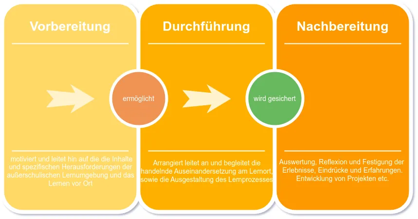

Didaktische Konzepte - Ausserschulische Lernorte
Der Bildungskontext außerschulischer Lernorte wird exemplarisch mit der folgenden praxisbasierten Mindmap skizziert. Sie dient dazu, allgemeine zentrale Begriffe und theoretische Grundlagen des Themenfeldes zu visualisieren und wesentliche Zusammenhänge aufzuzeigen. Die Abbildung zeigt die verschiedenen Zugänge zum Thema, darunter fachdidaktische Ansätze, spezifische Lehr-Lernformen und Lernstrukturen sowie einige Praxisbeispiele, die sich auf außerschulische Lernorte beziehen. Diese Elemente bilden den Hintergrund für die weitere Ausarbeitung konkreten Realisierungen außerschulischer Lernorte (Freericks, Wulf, und Brinkmann 2017).
Themenfeld der Didaktik ausserschulischer Lernorte, verändert nach (Freericks, Wulf, und Brinkmann 2017).
Modelle und Konzepte für ausserschulische Lernorte
Didaktische Ansätze für außerschulische Lernorte werden in der wissenschaftlichen Literatur breit diskutiert, wobei die Studien und Publikationen eine große konzeptionelle und begriffliche Vielfalt aufweisen (Baar und Schönknecht 2018). Nahezu alle Bildungsbereiche haben relevante fachliche didaktische Modelle und Methoden adaptiert. Jedoch fehlen spezifische didaktische Modelle für außerschulisches Lernen weitgehend (Baar und Schönknecht 2018).
Das Kreismodell nach Freericks
Freericks hebt vier Hauptthesen in der Didaktik außerschulischer Lernorte hervor: die Transformation traditioneller didaktischer Ansätze, die Beibehaltung konventioneller Lernmethoden, die Einzigartigkeit außerschulischer Lernformen und die Unterscheidbarkeit dieser Lernumgebungen (Freericks, Wulf, und Brinkmann 2017; Freericks und Brinkmann 2020). Das bekannte didaktisches Dreieck bestehend aus Lehrenden, Lernenden und Lerninhalten, erhält in der außerschulischen Didaktik eine dynamische Komponente, wobei vor allem der Lernort und die dort verbrachte Zeit als modifizierende Faktoren hinzukommen. Außerschulische Lernorte gehen über den traditionellen Schulunterricht hinaus und zeichnen sich nach Freericks durch drei Hauptelemente aus (Freericks, Wulf, und Brinkmann 2017):
Funktional: Außerschulische Lernorte dienen nicht nur bildungspolitischen Zwecken, sondern beinhalten auch Aspekte wie Produktions-, Forschungs- und Medienkompetenz. Sie ermöglichen die praktische Anwendung von Wissen und Fertigkeiten in unterschiedlichen Kontexten.
Strukturell: Diese Lernorte werden in ihrer räumlichen und zeitlichen Dimension betrachtet. Sie zeichnen sich durch eine hohe Flexibilität in der Nutzung aus, was sie von schulischen Lernumgebungen unterscheidet. Die Einbettung in den Lehrplan kann dazu beitragen, das Interesse der Lernenden zu wecken und Wissen zu vertiefen.
Spezifisch: Die spezifischen didaktischen Mittel, die an diesen Orten eingesetzt werden, wie z.B. Workshops, Lernstationen, Expertenführungen oder forschendes Lernen, gestalten die Lernerfahrung und helfen, die Lernziele auf originäre Weise zu erreichen.
Diese Strukturierung kann gut genutzt werden, um die komplexen Wirkungszusammenhänge konkreter Lernorte zu visualisieren. Nachfolge Abbildung zeigt exemplarisch eine solches Kreisdiagramm für den Ausserschulischen Lernort Urban Gardening.
Die Feindimensionen
Neben den allgemeinen didaktischen Kriterien sollten außerschulische Lernorte auch anhand detaillierterer Feindimensionen der Wissensvermittlung geplant und bewertet werden. Diese beleuchten speziell die Art der Wissensvermittlung in Bezug auf die Rolle des Lernenden sowie die Einflüsse des Raumes. Um die Variabilität dieser Einflüsse an verschiedenen Lernorten darzustellen, ist eine Darstellung mit Skalen sinnvoll. Diese Skalen helfen zu erfassen, wie stark oder auf welche Weise diese Dimensionen zur Wissensvermittlung an verschiedenen Lernorten beitragen. Die folgende Abbildung zeigt exemplarisch eine solche Darstellung amn einer Schar von Skalenstrahlen.
Technik/Grad der Medialisierung:.
Außerschulische Lernorte nutzen häufig Medien wie Videobeiträge, Hörstationen und Touchscreens, um Inhalte anschaulich und abwechslungsreich zu vermitteln. Es besteht eine klassische Sender-Empfänger-Beziehung, wobei die Interaktion variieren kann. Die Medien können unidirektional oder bidirektional genutzt werden, je nachdem, ob der Lernende selbst aktiv und individuell mit den Medien interagiert.
Grad der Selbststeuerung:.
Nicht alle außerschulischen Lernarrangements ermöglichen ein hohes Maß an Selbststeuerung durch den Lernenden. Während einige Arrangements, wie z.B. Vorlesungen, stark vorgegeben sind, ermöglichen andere, wie z.B. frei begehbare Raumarrangements, eine aktive und selbstbestimmte Nutzung der Lernangebote.
Beteiligung der Lernenden:.
In manchen außerschulischen Kontexten erfolgt die Aneignung von Inhalten eher rezeptiv, wie z.B. bei Informationstafeln oder Videos. Andere Exponate erfordern eine aktive Beteiligung des Lernenden, um den Lerninhalt zu aktivieren, z.B. durch die Manipulation von Schleusen oder Dämmen in einem Exponat über Wasserkraft.
Art der Wissensvermittlung:.
Die Wissensvermittlung kann stark vorstrukturiert oder offen gestaltet werden. Bei offenen Formen können sich die Lernenden die Inhalte spielerisch selbst erarbeiten, während strukturierte Wege vorgegeben werden. Ein Beispiel für eine offene Form ist eine interaktive Medienperformance, bei der die Inhalte durch die aktive Beteiligung des Lernenden mit einem Tablet gestaltet werden.
Emotionale Beteiligung:.
Die emotionale Beteiligung variiert stark und ist oft eng mit dem Lerninhalt und der räumlichen Nähe verbunden. Sie kann von Unterhaltung und Spaß bis hin zu persönlicher Betroffenheit reichen, wie die Unterschiede zwischen einem Freizeitpark und einer KZ-Gedenkstätte zeigen.
Gestaltung/Ästhetik: Ästhetik spielt eine wichtige Rolle bei der Vermittlung von Inhalten in außerschulischen Lernkontexten. Sie reicht von funktional-naturalistischem Design bis hin zu narrativem Design, das einen ästhetischen Erzählrahmen schafft und Lerninhalte in ein ganzheitliches Raumdesign integriert, wie im Universum Bremen zu sehen (Freericks, Wulf, und Brinkmann 2017, 19f.).
Praktische Umsetzung
Vor allem Sauerborn und Brühne (2020) bieten detaillierte Konzepte und Modelle und Methoden zur Strukturierung außerschulischer Lernorte. Ausgehend von der Prämisse, dass außerschulisches Lernen einen wichtigen Beitrag zur Entwicklung neuer Kompetenzen leisten kann, konzentrieren sie sich auf praxisorientierte Ansätze und die Nutzung realer Lebenssituationen, um den Lernprozess anschaulicher zu gestalten. Neben anderen Ansätzen nehmen das forschende Lernen, das Entdecken und Beobachten sowie das selbstständige Arbeiten außerhalb des Unterrichts einen besonderen Stellenwert ein. In der folgenden Abbildung ordnen sie die gängigen methodischen Lernformen den drei methodischen Ebenen Mikro-, Meso- und Makromethodik (vgl. Meyer 2004) des außerschulischen Lernens zu.
Didaktische Konzepte für außerschulische Lernorte, insbesondere in Bezug auf Klimaresilienz, sollten darauf abzielen, Schüler:innen für Umweltfragen zu sensibilisieren und sie zu motivieren, eigenständig Veränderungen in ihren Lebenssituationen herbeizuführen. Die Lehrkräfte müssen daher den Unterricht nach Kriterien gestalten, die sicherstellen, dass die Situationen für die Schüler:innen aktuell und relevant sind, in ihren subkulturellen Lebenswelten real existieren und beeinflussbar sind. Der Lernprozess entsteht durch das Zusammenspiel von Situationsbezug und Handlungsorientierung, wobei die Schüler ihre eigene Betroffenheit nur dann wirklich erfahren, wenn die Lerninhalte eng mit ihrer Lebenswelt verknüpft sind. Insbesondere Umweltbildung sollte fächerübergreifend erfolgen, um die Perspektiven verschiedener Disziplinen zu integrieren und zu verdeutlichen, dass Umweltthemen alle Lebensbereiche betreffen. Hier ist das Fach Geographie hervorragend aufgestellt.
Die Bedeutung außerschulischer Lernorte ist deshalb so groß, weil rein theoretisches Wissen nicht ausreicht, um Schüler zu aktivem Handeln zu bewegen. Außerschulische Lernorte bieten unverzichtbare praktische Erfahrungen. Diese Bildung sollte kritisch sein, die Schüler ermutigen, eigene Ideen einzubringen und die prinzipielle Wandelbarkeit und Subjektivität wissenschaftlicher Aussagen berücksichtigen und transparent machen.
Planungsdreischritt
Die methodische Planung des außerschulischen Lernens kann durch den sogenannten Planungsdreischritt vorgenommen werden, der auf den ersten Blick banal erscheint, sich aber als effektiv erweist (Burk und Claussen 1980) zu orientieren.
 Nachfolgend ein exemplarisches dreistufiges Planungsschema an einem außerschulischen Lernort in einer Universitätskleinstadt mit Schwerpunkt auf der handlungsorientierten Nachbereitungsphase des Urban-Gardening-Projekts.:
1. Vorbereitung
Ziele festlegen:. Die Schülerinnen und Schüler sollen die vielfältigen Aspekte des Urban Gardening, einschließlich seiner Vorteile und Herausforderungen, sowie seine Rolle für die Klimaresilienz und Nachhaltigkeit von Städten verstehen.
Einführung:. - Die Lehrkraft führt in die grundlegenden Konzepte des Urban Gardening ein, diskutiert positive Effekte wie Biodiversität und städtisches Mikroklima sowie Herausforderungen wie Ressourcenmanagement und Gentrifizierung. - Darstellung der Funktionalität von Urban Gardening in Bezug auf soziale, ästhetische, produktive und ökologische Aspekte.
Podiumsdiskussion:. - Expertinnen und Experten aus Stadtplanung, Umweltwissenschaften und Sozialarbeit diskutieren über Urban Gardening mit Fokus auf Klimaresilienz und urbane Grünachsen.
Rechercheaufgaben:. - Studenten recherchieren erfolgreiche Urban Gardening Projekte und deren Ansätze zur Lösung spezifischer urbaner Probleme, um Best Practices und innovative Ideen zu sammeln.
2. Lernort - Urban Gardening Projekt in Marburg
Beobachtung und kritische Analyse:. - Die Schüler beobachten und analysieren die angewandten Praktiken des Urban Gardening, einschließlich der Pflanzenauswahl, des Wassermanagements und der integrativen Designansätze. - Teilnahme an einer Führung, die sich speziell auf die Herausforderungen und Lösungen des Projekts konzentriert.
Praktische Aktivitäten:. - Die Schülerinnen und Schüler entwickeln alternative Nutzungskonzepte für den Garten, um den Raum optimal zu nutzen und verschiedene Bedürfnisse zu integrieren. - Die Schülerinnen und Schüler befragen Anwohnerinnen und Anwohner zu ihrer Akzeptanz und Beteiligung.
3. Nachbereitung
Analyse und Anwendung des Gelernten:. - Die Schüler entwickeln eigenständige Projekte, die auf den gewonnenen Erkenntnissen basieren, um den Garten zu verbessern oder neue urbane Gartenprojekte zu planen. - Interaktive Präsentationen ihrer Projekte durch Führungen, bei denen sie ihre Vorschläge und Veränderungen im realen Gartenkontext demonstrieren.
Beteiligung der Gemeinschaft:. - Durchführung von Planungsworkshops, in denen die Schüler ihre Ideen und Projekte der lokalen Gemeinschaft vorstellen und aktiv Feedback einholen. - Übernahme von Patenschaften für Teile des Gartens, um langfristige Verantwortung und kontinuierliches Engagement zu fördern.
Förderung von Reflexion und kritischem Denken:. - Schüler führen Reflexionstagebücher und nehmen an Debatten über kritische Themen des urbanen Gärtnerns teil. - Erstellung von digitalen Portfolios oder Blogs, um den Projektfortschritt zu dokumentieren und die Ergebnisse einer breiteren Öffentlichkeit zugänglich zu machen.
Dieser umfassende Ansatz ermöglicht es den Schülern, sich aktiv an der Gestaltung und Verbesserung ihrer Lernumgebung zu beteiligen und gleichzeitig einen tieferen Einblick in die komplexen Zusammenhänge urbaner Ökosysteme und deren Management zu gewinnen.
Granulare Ausplanung
Mehrstufige und granulare Modelle des außerschulischen Lernprozesses können in der Praxis zwar als schwer umsetzbar und für den Lernprozess als problematisch angesehen werden. Dennoch ist es in vielen Situationen hilfreich, die Grobplanung nach Burk und Claussen (1980) in eine Feinplanung zu überführen.
Die folgende Übersicht zeigt beispielhaft und schematisch, welche Arten der Handlungsorientierung an diesen außerschulischen Lernorten vermittelt werden sollten. Vor allem die Bedeutung der Vor- und Nachbereitung wird noch einmal deutlich.

Resumè
In der Praxis des außerschulischen Lernens verliert das ursprüngliche pädagogische Konzept oft seine Struktur und verliert sich in einem ideologisch gefärbten Meinungsgewirr, das der Schule, dem Unterricht und vor allem den Kindern und Jugendlichen wenig hilft. Lehrerinnen und Lehramtsanwärterinnen empfinden die ständige Diskussion in der Bildungsforschung oft als ermüdend und nicht zielführend. Dennoch wird außerschulisches Lernen von Bildungsexpertinnen als wirksame Methode anerkannt, die aktivierendes und handlungsorientiertes Lernen unterstützt. Es erscheint notwendig, das außerschulische Lernen wiederzubeleben und als festen Bestandteil der Bildungspraxis zu etablieren, um den Schülerinnen authentische Erfahrungen und eine lebensweltlich bereicherte Bildung zu ermöglichen. Gerade die Kombination von erfahrungsbasiertem und systematischem Lernen bietet die Möglichkeit, eine zukunftsorientierte und qualitativ hochwertige Bildung zu gewährleisten.